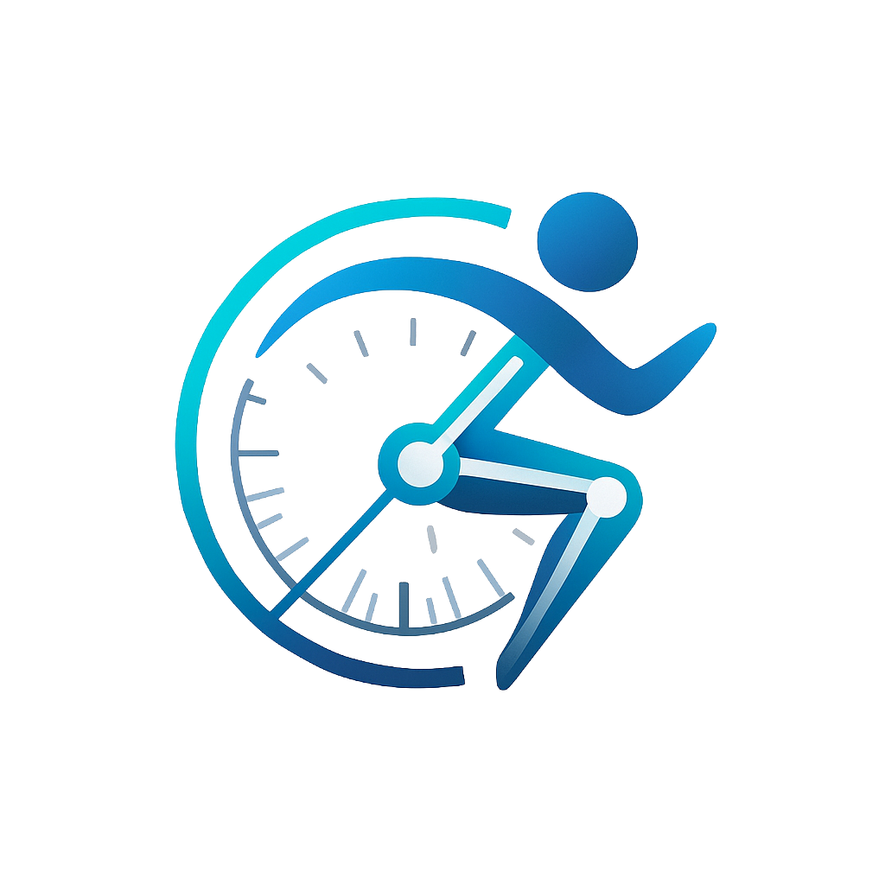

Angle: 0°
Preset updated
Goniometry Trainer
drag me
Model
Roma
Roman
Position
Standing (Default)
Supine (Face Up)
Prone (Face Down)
Sitting
Body Region
(Select region…)
Cervical Spine
Thoracic & Lumbar Spine
Glenohumeral Joint
Elbow & Radioulnar Joints
Wrist
Hip
Knee
Talocrural (Ankle)
Transverse Tarsal & Subtalar
Action
Angle (°)
Run Action
📌 Goniometer Placement
1
Fulcrum
2
Stationary
3
Moving
Range of Motion
▶️ Start ROM
↺ Reset ROM
↺ Reset Measurement
Interaction Locks
🔓 3D: Unlocked
🔓 Gonio Arm: Unlocked
Text Tuner
X:
Y:
R:
Log
Controllers
Goniometer
Rotate Moving Arm — CW (°)
Rotate Moving Arm — CCW (°)
Rotate Goniometer (°)
Gonio Size (10–200%)
Gonio X (px)
Gonio Y (px)
Model
Model X (m)
Model Z (m)
Model Y (m) — up/down
Model Scale (%)
Model Yaw (°)
Bone (Advanced)
Bone (Blender order)
Rotate X (°)
Rotate Y (°)
Rotate Z (°)
Zero Bone
Zero All
Event Log
Loading…
Goniometer Placement
✕
Goniometer Placement
✕